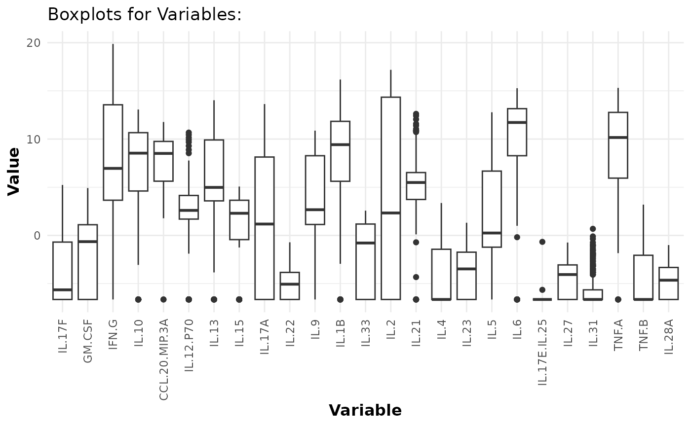

This function creates a PDF file containing box plots for the continuous
variables in the provided data. If the number of columns in data exceeds
bin.size, the function splits the plots across multiple pages.
Arguments
- data
A matrix or data frame containing the raw data to be plotted.
- pdf_title
A string representing the name of the PDF file to be created. If set to
NULL, the box plots are displayed on the current graphics device. Default isNULL.- bin_size
An integer specifying the maximum number of box plots to display on a single page.
- y_lim
An optional numeric vector defining the y-axis limits for the plots.
- scale
An optional character string. If set to "log2", numeric columns are log2-transformed.
Examples
# Loading data
data.df <- ExampleData1
# Generate box plots for log2-transformed values to check for outliers:
cyt_bp(data.df[,-c(1:3)], pdf_title = NULL, scale = "log2")
